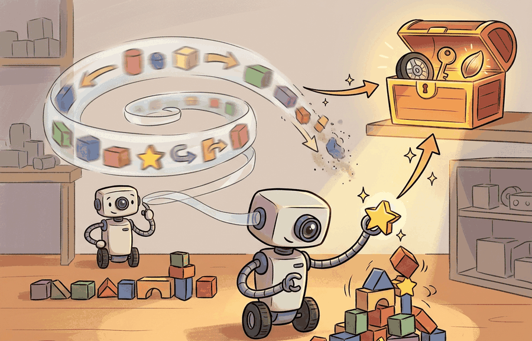

"I remembered the last ten seconds perfectly, then promoted the wrong ten seconds forever."
A Short-Term Buffer Seeking Tenure

This section assumes familiarity with partial observability from section 2.7 and with latent state representations from section 38.2. The working/long-term split introduced here is formalized into spatial, episodic, and semantic stores in section 56.2. The question of what the agent should retain across tasks over a lifetime is taken up in section 57.1.
Why memory matters; short- vs. long-term is the section where a reactive controller becomes an agent that can exploit the past without confusing the past for ground truth. Working memory supports the next few control steps; long-term memory supports later planning, recovery, and reuse of past experience.
Why Memory Enters The Loop
Embodied agents operate under partial observability. Objects leave the field of view, force signals lag behind contact, and goals often remain active longer than a single observation window. In these settings, a policy that depends only on the current frame is often too myopic.
The important distinction is between memory that helps the next action and memory that should influence a later task. A good design preserves only the information that meaningfully changes future control or planning.
If a stored item does not improve action selection, recovery quality, or task disambiguation, it belongs in a dataset or archive, not in the agent's memory system.
Theory
A compact memory-augmented control model is
$$h_t = f_\theta(h_{t-1}, o_t), \qquad m_t = \operatorname{Retrieve}(q_t, \mathcal M), \qquad a_t \sim \pi_\phi(a \mid o_t, h_t, m_t, g_t).$$
The latent state $h_t$ is working memory: a compact representation of the recent past optimized for immediate control. The external store $\mathcal M$ is long-term memory, optimized for persistence, indexing, and selective retrieval. The query $q_t$ depends on task and context, so long-term memory is not merely "more history"; it is a searchable support for future decisions.
Working memory compresses recency. Long-term memory preserves selected experiences, maps, or facts that remain useful after the immediate control horizon ends.
Worked Example
Suppose a kitchen robot loses sight of a mug when a cabinet door closes. Working memory can preserve the mug pose estimate long enough to complete the grasp. Long-term episodic memory can preserve the fact that the last handle grasp on that mug slipped, so the next attempt should favor a side grasp.
from dataclasses import dataclass, asdict
@dataclass
class MemoryItem:
kind: str
payload: str
ttl_s: int
value_for_action: str
def as_row(self) -> dict[str, object]:
return asdict(self)
working = MemoryItem(
kind="working_state",
payload="mug pose estimate in robot base frame",
ttl_s=2,
value_for_action="continue grasp despite one-frame occlusion",
)
episodic = MemoryItem(
kind="episode",
payload="failed handle grasp on ceramic mug",
ttl_s=86400,
value_for_action="prefer side grasp next attempt",
)
print(working.as_row())
print(episodic.as_row()){'kind': 'working_state', 'payload': 'mug pose estimate in robot base frame', 'ttl_s': 2, 'value_for_action': 'continue grasp despite one-frame occlusion'}
{'kind': 'episode', 'payload': 'failed handle grasp on ceramic mug', 'ttl_s': 86400, 'value_for_action': 'prefer side grasp next attempt'}The expected output shows that the two items differ in both lifetime and control function. The first item is about short-horizon continuity. The second is about future adaptation across episodes. Treating them as one generic memory type would hide that design difference.
A ttl_s of 2 for the working-memory item is not pessimism; it is the robot politely admitting that a mug pose estimate grows stale faster than leftover coffee.
- Maintain a short-horizon working buffer for recent observations and hidden state.
- Score events by future decision value rather than by visual salience alone.
- Promote an event to durable memory only if it changes planning, recovery, or task disambiguation later.
- Attach freshness, source, and embodiment metadata to every promoted item.
- Expire or demote memories that no longer improve action quality.
Recurrent or transformer policy state handles working memory. Vector stores, ROS 2 bag replay, scene graphs, and LeRobot episode logs support long-term memory, but only if they preserve timestamps, frames, provenance, and embodiment metadata.
SayPlan (Rana et al., 2023) uses a scene-graph query as long-term semantic memory while a GPT-4 context window serves as working memory for the current instruction; the two stores are queried at different frequencies and with different keys. Neural Topological SLAM (Chaplot et al., 2020) maintains a local egocentric occupancy map as working memory (updated every step) and a topological graph of named waypoints as long-term memory (updated only on room entry). In both systems, the boundary between the two tiers is defined by decision horizon, not by data volume.
When using FAISS or ChromaDB as the long-term store, set a retrieval score threshold (e.g., collection.query(score_threshold=0.75) in ChromaDB) rather than relying on the default top-k with no minimum similarity. Without a threshold, the retrieval always returns k results even when none are decision-relevant, which is the direct mechanism behind the 8-point success-rate drop described in the warning below. A threshold of 0.7 to 0.8 (cosine similarity) is a reasonable starting point; tune it by checking whether retrieved episodes actually match the current object instance and task context, not just the embedding neighborhood.
Practical Recipe
- Benchmark a no-memory baseline and a short-horizon working-memory baseline.
- Add only one long-term memory type at a time.
- Measure whether the added memory improves delayed decisions or repeated tasks.
- Track retrieval latency, hit rate, and stale-memory usage.
- Keep all variants on one evaluation panel.
Teams often interpret large memory stores as richer cognition. In practice, storing too much without a promotion policy often degrades retrieval quality and increases planning latency. The mechanism is straightforward: a nearest-neighbor retrieval over 10,000 undifferentiated episodes returns whichever episode is superficially similar to the current query, not the one that is decision-relevant. In one reported household manipulation study, adding episodic memory without a promotion filter reduced task success rate by 8 percentage points relative to the no-memory baseline because stale grasp attempts on different object instances were retrieved and misapplied. A promotion gate that scores events by future decision value keeps the store small enough that retrieval stays precise.
A warehouse robot may keep short-term lidar and odometry state for local continuity while separately storing that aisle B often contains temporary pallet obstructions after 4 p.m. The first supports immediate control. The second supports future route planning.
Open questions include learning what to remember automatically, representing uncertainty over memory items, and deciding what can be shared across embodiments without losing robot-specific validity.
Can you name one decision improved by working memory and one later decision improved by long-term memory? If not, the memory design is still underspecified.
- Working memory supports immediate control under partial observability.
- Long-term memory supports later planning, recovery, and reuse of experience.
- Promotion into durable memory should be justified by future action value, not by sheer volume of history.
Design a memory budget for a household robot tasked with fetching cups. Specify one working-memory item, one episodic memory item, their time-to-live, and the exact decision each one should improve.
Section References
Parisotto, E. and Salakhutdinov, R. Neural Map: Structured Memory for Deep Reinforcement Learning. ICLR, 2018.
Use for differentiable spatial memory and the distinction between stored geometry and policy state.
Chaplot, D. S. et al. Neural Topological SLAM for Visual Navigation. CVPR, 2020.
Use for map-like memory that supports navigation decisions rather than generic retrieval.
What's Next?
Next, continue with Section 56.2, where the memory system is split into spatial, episodic, and semantic stores with distinct query types.